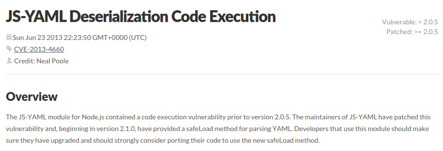
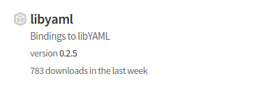

Don't write code
(and how to not-do-it well)
This is not a new sentiment.
Need to do $X?
{npm,pip,gem} install $XNot so fast
So “don't write code”, fine…
We know we should look for an existing wheel rather than (re-)inventing our own. But how do we pick the right one?
Examples of terrible criteria
- It has many stars on GitHub
- It has many downloads this week on npmjs.org
- Someone tweeted about it
Better criteria
- Been in stable production use for a while
- Healthy bug report/fix lifecycle
- Good packaging and availability of updates
- Periodic security reviews
- (All the usual stuff about doing one thing well...)
Hypothesis: candidates from outer rings meet more of those criteria

Resource comparison
| OS/platform: | massive user base, funding | |
| Lang stdlib: | large user base, some funding | |
| 3rd party libs: | highly variable, need to research | |
| Your code: | usually lean as hell | |
On to some examples
Daemonizing your server

Daemonizing your server
require('daemon')();
console.log("Yay I'm now a daemon! Right?");

Daemonizing your server
- Fork
- Write a pidfile
- Change umask
- Change UID/GID
- Set the process name
- Clean up ENV
- Change working dir
- Create a new session ID
- Fix stdin/out/err
Better solutions
Linux
BSD
- They do all that stuff and more
- They come from the OS/Platform layer
- Only minor code changes required, like setting process name
Next: YAML parsing


Trying again with libyaml


What libyaml did right
By wrapping native libraries, it got the direct benefits of review by teams like Red Hat Product Security, who found this CVE.
What libyaml did wrong
Re-use by copy/paste meant that the Node libyaml author had to get around to patching his own copy of the native source. Just updating your OS copy of the library didn't fix the problem.
libyaml hall of shame
Some libraries that wrap by copy/paste still haven't been updated for this 2013 vulnerability. (https://github.com/tarruda/node-libyaml)
Next: npm, pip and gem
- Undeniably convenient
- Quality control is problematic - no moderation
- Security nightmare - no review, no signing*
npm, pip and gem
Use tools like nsp to check your dependencies for updates and vulnerabilities.
$ nsp audit-package
Name Installed Patched Vulnerable Dependency
express 4.2.0 >=3.11 <4 || >=4.5 myapp > express@4.2.0
send 0.3.0 >= 0.8.4 myapp > express@4.2.0 > send@0.3.0
qs 0.6.6 >= 1.x myapp > express@4.2.0 > qs@0.6.6
serve-static 1.1.0 ~1.6.5 || >=1.7.2 myapp > express@4.2.0 > serve-static@1.1.0Next: deployment
nibbler, envoy, shake, roco, gogogo, deploy, sneaky, yala, dploy, grunt-ftp-deploy, pushover, ploy, bora, deployjs, deployme, edy, gitnodeploy, katapult, paratrooper, nin, rodent, deploy-goon, …
None of these should exist
Deployment
- Use real packages (.deb, .rpm, …)
- Use real automation tools (puppet, ansible, …)
- Deploy over SSH with pre-shared keys (FTP is never ok)
Summary
- Use other people's code
- Do due dilligence first, and think about your selection criteria
- Prefer big tech communities that have the resources to do proper research